Alphabet city in the early 80s.
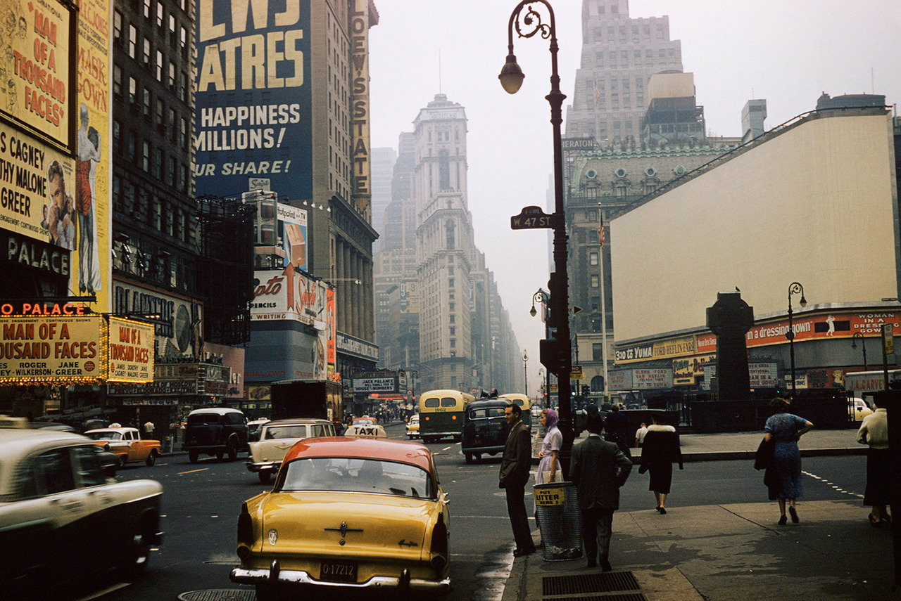
By request… 47th Street - New York - 1957 - photograph by André Robé
Alphabet city in the early 80s.
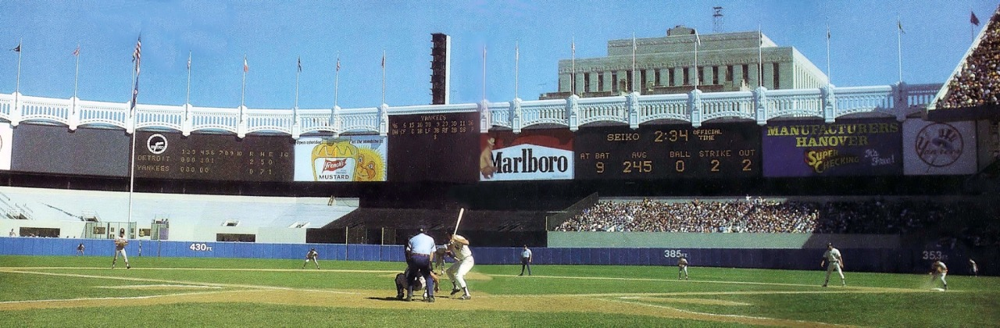
Yankee Stadium, 1976. Craig Nettles at bat. Sponsored by Marlboro.
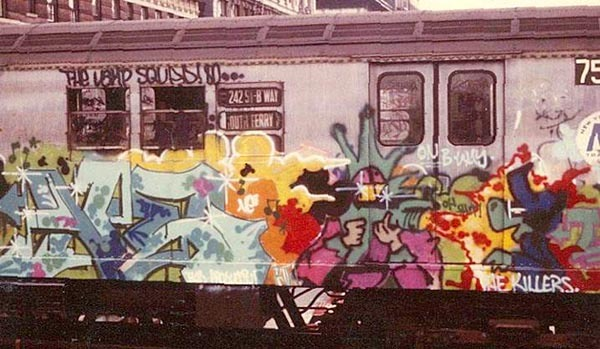
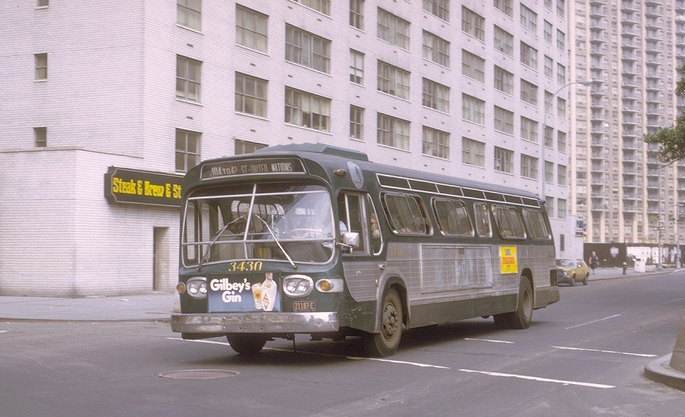
Broadway and 68th Street in 1973. Way more deserted than present day.

7th Ave and 47th Street, 1981.
by William Claxton
Times Square, New York City, 1960.
(via Kroutchev Planet Photo)

95th and Columbus in the 1970s.
Tompkins Square Park, 1967
IMAGE: JAMES JOWERS GEORGE EASTMAN HOUSE
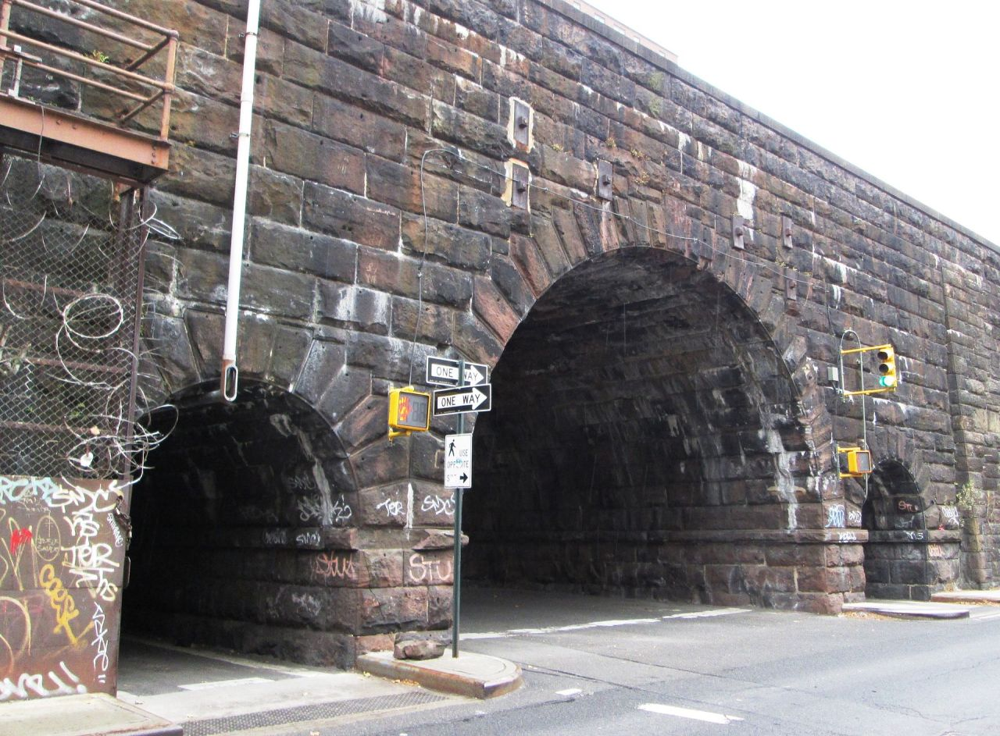
Park Ave and 105th Street
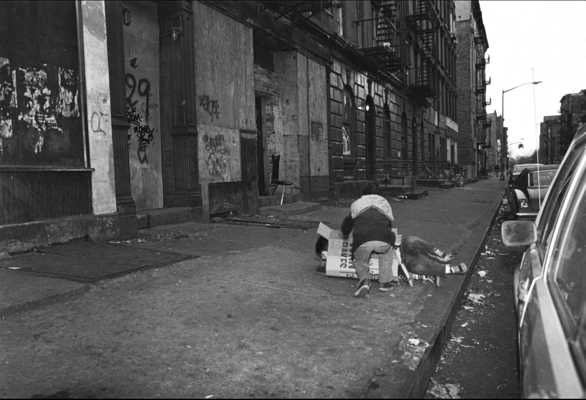
Kids pretending to be homeless in Alphabet city in the early 80s.

Brighton Beach, 1980. Where millions of city folk would flock each summer and pretend the water wasn’t disgusting.
Subway in the 70s.

2nd Ave near 84th St., 1968.
Manhattan, 1977
Rene Burri
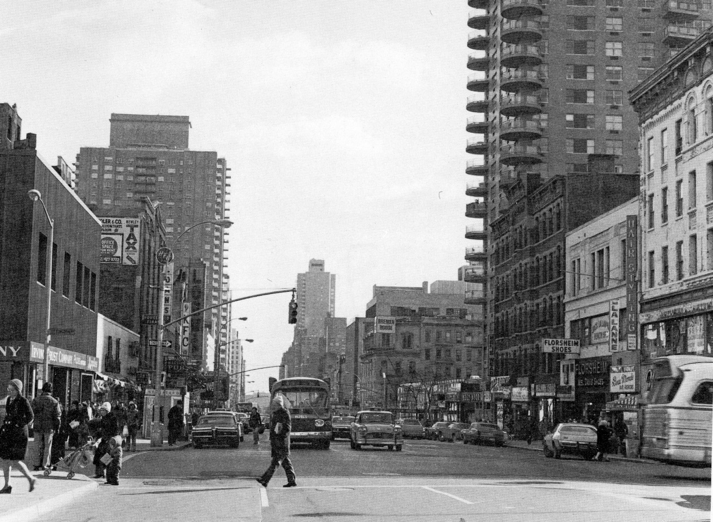
East 86th Street, 1975.

What? Ain’t you ever seen someone in hot pink, gold, with UFO sunglasses before? Move along.
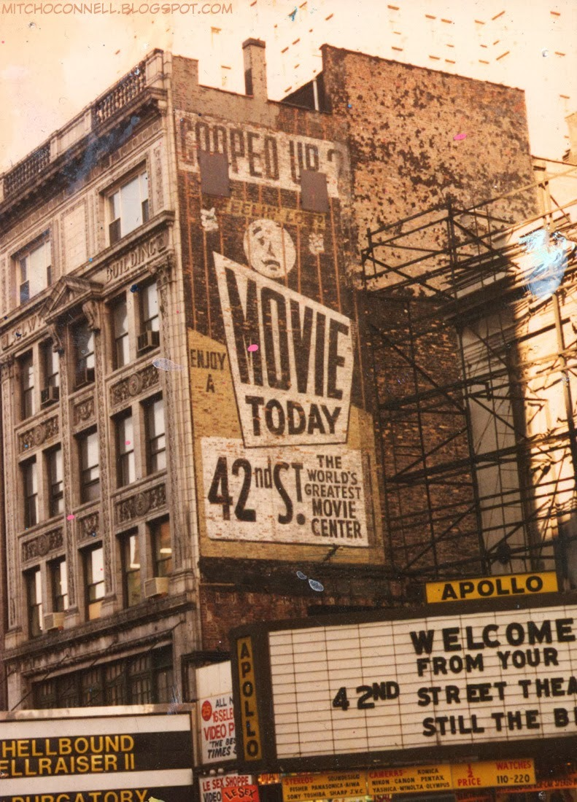
Photo by Mitch O’Connell
Source: mitchoconnell.blogspot.com
Central Park, 1985
Ferdinando Scianna
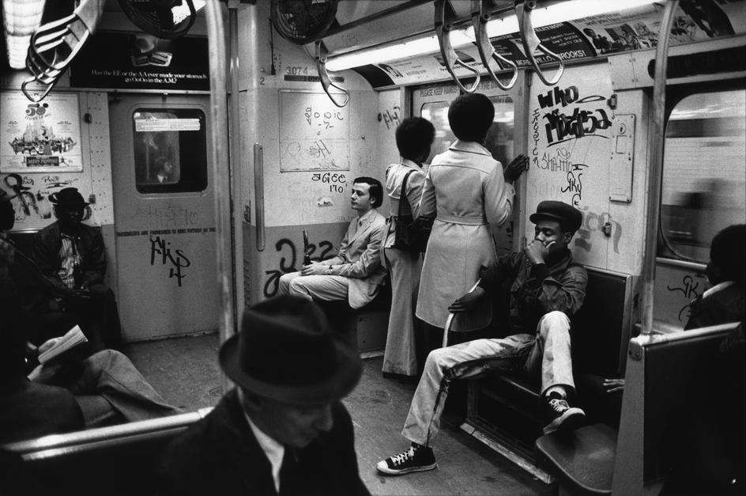
NYC subway, 1973.
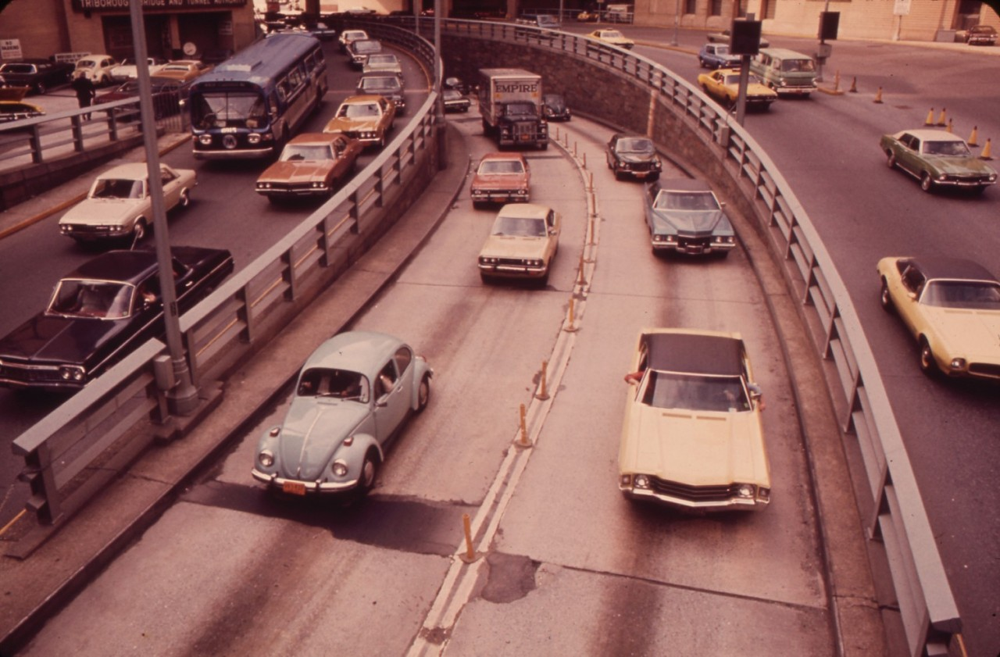
On the way to Brooklyn via the Battery Tunnel, 1973.


DONDI surrounded by paint spray - 1980
This shot is supposedly from 1982. Pretty wack for then. Funny, it’d be cool if it had been 1977. Five years makes all the difference.

NYPD switchboard ops in 1909
Classic 80s graffiti

Broadway and 4th St in 1970.

Working on 45th Street. Nice uniforms.
Hey, thanks David. Happy to have you along for the nostalgic ride. Feel free to reblog whatever, whenever you want. Cheers!
Skeme, Agent & Lady Pink - 1982 -The Yards - Manhattan

Checker cabs at Broadway and 68th. 1970s.
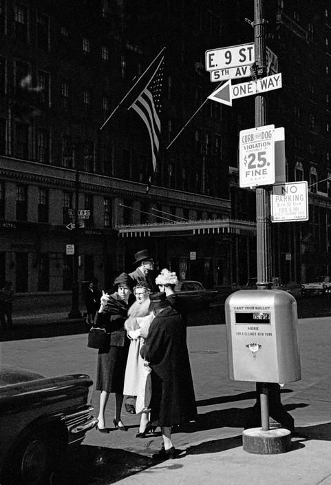
New York 1962

The Apollo in 1970. The marquis is set up for a movie: “Cotton Comes to Harlem,” featuring the fictional band The Gospelodeons.
149th Street, mid 70s.

Santa busts a perp. 1970s, 34th and 7th.